Data
Data
英文的「 Data 」是複數形，是指大量資料，而非一筆資料。
中文的「資料」，大家國文造詣都很棒，應該都知道是什麼意思。不過為求慎重，還是查一下國語字典吧：
一、可供參考或研究的材料。如：「第一手資料」、「原始資料」。 二、生產、生活中必需的東西。如：「生產資料」、「生活資料」。 三、在社會科學中，指研究者對社會現象中某些事實所作的紀錄。 四、計算機中一切數值、記號和事實的概稱。通常指未加以處理者。
聽起來有點複雜，就當我沒查吧。
簡單來說，計算機拿來儲存、拿來計算的東西，就叫做資料。
程式語言的變數
「資料」聽起來不明不白，有點抽象。對於初學者來說，從程式語言的變數入手，會比較有感覺。
上面這些都是一筆資料的 C++ 程式碼範例。可是如果有非常多筆資料怎麼辦呢？
可是如果有一萬筆、一億筆資料怎麼辦呢？
是的，這時候你就必須學習「資料結構 Data Structure 」。要不然你會抓狂的。
資料結構是資料的儲存方式。資料結構的用途，是讓我們計算資料的時候，可以簡便地、快速地存取資料。
由於坊間已有許多圖文並茂的資料結構書籍，以下不再重複整理，僅做重點介紹。
大量 Data 資料結構 :
Array / List
Array
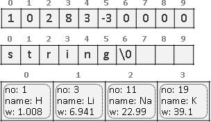繁中「陣列」，簡中「数组」。連續的記憶體。
一個格子放入一筆資料，資料可以是一個數字、一個字元（所有字元合起來變成字串）、一個物件等等。
搜尋、插入、刪除的時間複雜度都是 O(N) 。資料已排序，則支援二分搜尋。
特殊的 Array
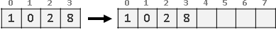根據資料數量，調整陣列大小，稱作 Dynamic Array 。每當陣列裝滿資料，就另外建立兩倍大的新陣列，將資料搬到新陣列，捨棄原陣列。搬移的總時間複雜度是 O(1 + 2 + 4 + 8 + ... + N) = O(2N - 1) = O(N) 。
可以直接使用 STL 的 vector 。
List （ Linked List ）
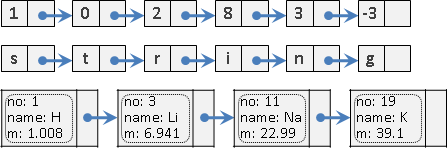繁中「串列」，簡中「链表」。藉由指標得到下一塊記憶體。
搜尋的時間複雜度是 O(N) 。知道正確位置，插入與刪除的時間複雜度是 O(1) ，否則必須先搜尋。無索引值，故不支援二分搜尋。
可以直接使用 STL 的 list 。
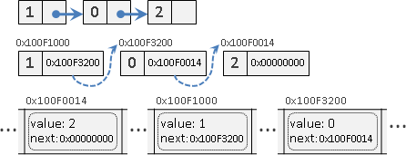深究串列，其實串列是用陣列實作。一步一步釐清：
上圖：藉由指標得到下一塊記憶體。
中圖：指標是一個變數，儲存記憶體位址。
下圖：電腦記憶體是一條很長的陣列，串列其實是散落在陣列裡面。另外還需要一個變數記錄串列的開頭，不過這邊沒畫上去。
特殊的 List
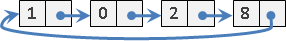尾串到頭，頭尾循環，稱作 Circular List 。特色是開頭可以隨便選、隨便動。
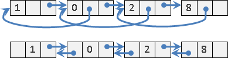只串單向，稱作 Singly Linked List 。雙向都串，稱作 Doubly Linked List ，特色是雙向都能搜尋。
Doubly Linked List 若用 XOR 實作，稱作 XOR Linked List 。
Doubly Linked List 若可以還原刪除動作，稱作 Dancing Links ，經常配合 Backtracking 一起使用。
List 裡面放入 Array
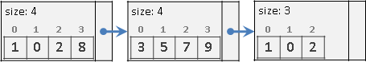英文網路稱做 Unrolled Linked List ，中文網路稱作「鬆散鏈表」、「塊狀鏈表」。查無正式學術名稱。
N 筆資料，分成 A 塊，每塊約 B = N/A 個元素。每塊各自記錄元素數量。
索引：先數塊、再數元素，時間複雜度為 O(A) 。
搜尋：全找，時間複雜度為 O(N) 。資料已排序，則為 O(A + logB) 。
插入、刪除：一塊大於等於 2B 就拆開成兩塊，相鄰兩塊小於等於 B 就合併成一塊，避免一拆開就要合併、一合併就要拆開，時間複雜度為 O(A + 2B) 到 O(2A + B) 。
N 筆資料，分成 A = sqrtN 塊，每塊約 B = sqrtN 個元素，是最均衡的，可令時間複雜度最低。索引、插入、刪除的時間複雜度為 O(sqrtN) 。競賽選手稱此技巧為 sqrt decomposition 。
上古時代的文字編輯器曾使用此資料結構。
Array 裡面放入 List
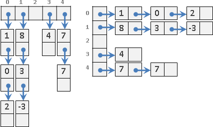大致上就是圖論的 Adjacency Lists 。
大致上就是之後提到的 Hash Table 。
大量 Data 資料結構 :
Queue / Stack
Queue
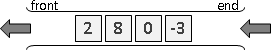繁中「佇列」，簡中「队列」。像排隊，維持資料前後順序。
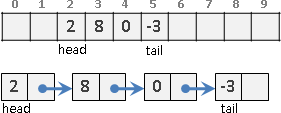Array 和 List 皆可實作。
插入、刪除需時 O(1) 。搜尋需時 O(N) 。
佇列有暫留的性質。
可以直接使用 STL 的 queue 。
特殊的 Queue
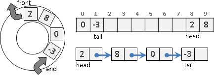記憶體循環使用，稱作 Circular Queue 。
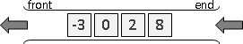資料保持排序，可以隨時得到最小（大）值，稱作 Priority Queue 。資料保持排序，可以隨時得到最小值、最大值，稱作 Double Ended Priority Queue 。
Stack
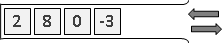繁中「堆疊」，簡中「栈」。像疊盤子，顛倒資料前後順序。
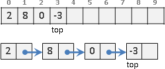Array 和 List 皆可實作。
插入、刪除需時 O(1) 。搜尋需時 O(N) 。
堆疊有反轉的性質、有括號對應的性質、有遞迴與疊代的性質。
可以直接使用 STL 的 stack 。
Deque （ Double Ended Queue ）
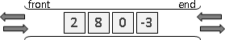兩頭皆能插入與刪除，稱作 Deque ，同時有著 Stack 和 Queue 的功效。
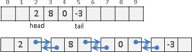Array 和 Doubly Linked List 皆可實作。
可以直接使用 STL 的 deque 。
UVa 12207